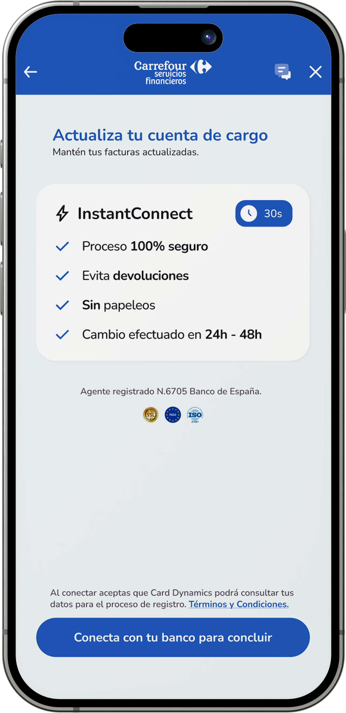
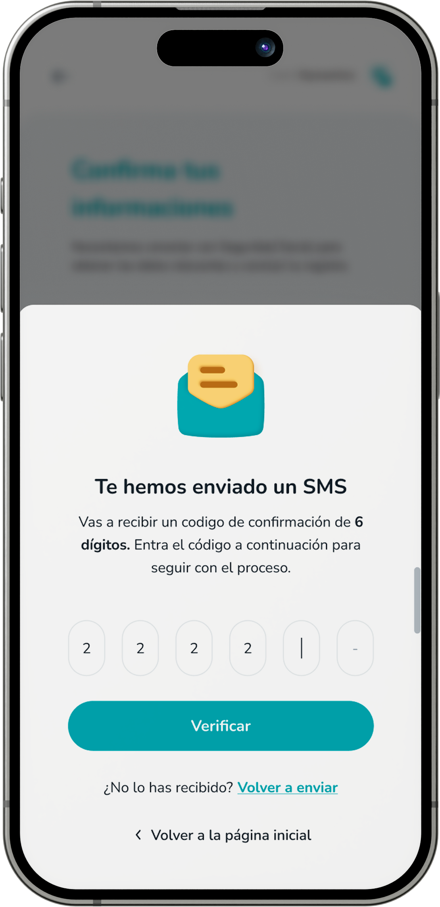

Making a complex financial journey feel navigable.
Design direction for Card Dynamics, bringing product, brand and mobile interface decisions into a more consistent experience.

Clarity matters when money is involved.
Financial tasks ask users to understand a process, trust what will happen and complete it without mistakes. Card Dynamics needed design direction that could work across its own product and partner experiences.
My role covered design operations and a wider product and brand revamp. The public screen examples show this direction applied to account connection, selection and verification flows.
Help people see where they are.
The account-connection screens use a prominent primary action and short, benefit-led explanations. Account selection places options in a familiar card format, while the confirmation screen separates the code task from the background journey.
Across these states, labels, actions and the supporting visual language need to remain legible even when partner branding changes. That is the practical design challenge behind a white-label product.
A system has to survive real screens.
Brand direction becomes useful when it helps people make decisions in the product. This work demonstrates the connection between design operations, interface consistency and the details of a financial flow.

